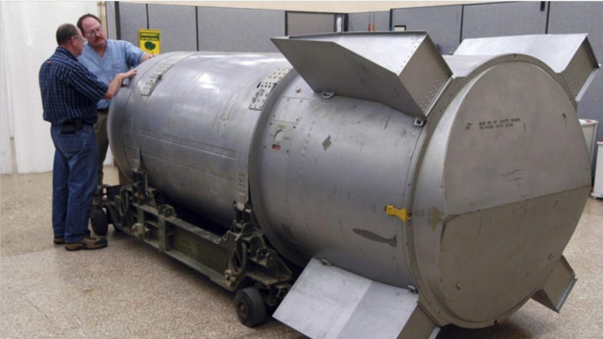

The following is the 19th part from a series of articles describing the adventure that a follower who goes by the handle "daegonmagus" has experienced since reading MM. They are very interesting and fascinating. I hope that you all learn from his journey and maybe learn a thing or two as he relates his unique experiences to the readership here. This particular read is truly enjoyable. I hope you all enjoy it as much as I have. -MM
Part 20 – SD’s Premonition of an Imminent Nuclear Attack set for 28th February 2022
Let’s get a few things straight, right off the bat; I am not here to fear monger people with this article. I ummed and arred about whether I should bother typing it, and after considering things I believe it warrants putting down on virtual paper, given the current situation unfolding in Ukraine. We all know how delicate this situation is. We all saw it coming. What concerns me is that SD and I have had our fair share of “dreams” – both lucid and not – that allude to the very real kicking off of WW3. These premonitions, as I guess you could call them have, quite readily shaped both of our ideals on survivalism. From nukes going off in out neighborhood, through the unleashing of the “black dragon” in China, to the Covid vaccine toilet paper shortage, we have had a myriad of premonition like dreams between us that upon reflection many years later seem to be at the very least metaphorically describing things unfolding around us. Other times they have been pinpoint accurate, like the closing off regional borders in our state, and placing of military personnel in the exact same places we had the border closure dreams (in both of our dreams beyond the borders were represented by a void of total nothingness.)
Here’s the concerning part, and I hope to fuck it is a complete miss on my part. I must apologize for not getting out sooner; the Ukraine shit has been unfolding so fast I have been trying to keep up with it all.
Back at the start of February SD tells me “the 22nd is when shit is going to go down”. Ok, so to put this into context, like I said our dreams have shaped our survivalism ideals, and have solidified the idea that all out nuclear war is at this stage, more likely a “when” than it is an “if”.
So when she says the 22nd is when shit is going to down, assume that automatically translates as some sort of SHTF event leading to WW3.
I press her on what it will be, but she tells me she doesn’t know, only that someone or something suggested to her the 22nd or “possibly even the 23rd for us when you take into account different time zones”. She just can’t get out of her head the 22nd/23rd February 22.
That day rolls around and what happens….well, we all know the answer to that question. Putin decides enough is enough and drives his army into Ukraine.
But that is not all.
The night of Putin’s grand entrance, SD has another dream. She is literally woken up by her own voice shouting at her “THE 28th”.
Then, whilst in the hypnogogic/ sleep paralysis state, she is suddenly in the middle of a city, with modern western style skyscrapers, and a big bomb is going off. And I mean BIG.
She specifically mentions this thing has a mushroom cloud, and the explosion seems to “cut the tops off the buildings” before the shockwave breaks all the windows and hits her.
It is so vivid she can smell and taste all the sulphur and metal.
The next day, again she is in hypnogogia and she has a follow up dream to the blast; a woman is standing at a podium either addressing the bomb or announcing her country’s intent to become involved.
This woman, SD says, her clothing makes her looks like she could be chubby, blonde hair put up in a bun behind her head, 40 to 50 years old, wearing a business suit style jacket.
SD end’s up looking up female women in power to try and see if she can find anyone resembling her. She comes across what she said was an “exact match” but the fucking phone loses the page before she can figure out who it is.
She looks up secretaries of defense of European countries and says the at both the Czechoslovakian and Belgian secretaries of defense look very similar to the woman she saw giving the address.
Something else that concerns me is a dream I had back on November 25th which suggested a military was prepping for a major nuclear exchange. I went back through the dream share thread and found my write up on it:
“I was some kind of special forces military guy. Not sure what division, but I am fairly sure I wasn’t a SEAL. The people around me seem to be wearing American Military camos but they could have just as easily been Russian.
It was night time and I was on this long straight road that seemed to run for miles through fields of either dead yellow grass, wheat or some other type of crop.
There are multiple military bases every couple of kilometres along this road. I pass one in particular, and it has a big metal cylindrical missile thing sticking out of the ground in a clearing on the other side of the fence that hugged the road. it didn’t look like a typical missile – it was more like a giant tin can with a flat top and it’s protrusion from its silo wasn’t very high – only a little bit taller than me.
To begin with I was walking.
I receive a call from my superior officer. He tells me that I need to assemble all the military personnel from the nearby {standard} bases to the silos that are scattered around the area. My orders are to go to each silo and personally give the orders to their commanding officers to prime the nuclear warheads, and to their lower ranking personnel that we are preparing for a test launch.
The real reason he tells me is different; we are either preparing for a pre-emptive strike on our enemies, or preparing for a retaliation attack for some other shit “we” have planned, I can’t specifically remember.
IT could have even been that America was the enemy.
I hop in my jeep and drive down this road; there are ALOT of these silos surrounded by a whole farm’s worth of vacant land. I watch as hundreds upon hundreds of these silo doors open and out pop these giant tin cans, ready for me to give the launch signal. Satisified I make my way up the road to continue with the rest.
This didn’t feel like a standard dream looked similar to this but without the fins. Google image caption reads “US nukes stored in Netherlands”:

just checked my fb and get this – i have a fucking friend request from a woman named “{first name} Littleboy”…. holy shit that’s not good
The edges were sharper just like a tin can. They didn’t really look like a typical bomb/ missile shape – certainly not very aerodynamic. Though I do remember thinking of them as “littleboys” at some points in the dream and when I woke up.
Hence why I figured it was America – i am very much aware of the littleboy and fat man bombs that were dropped on Hiroshima/Nagasaki – fuck come to think of it a couple of them may have even been called Minutemans by some of the military staff. Whatever was going on, someone was arming practically their entire {ground based} nuclear arsenal for war.
Maybe the littleboy thing was for me to pay attention to the synchronicity.”
I sure as fuck hope me and SD are wrong on this one, but in case we aren’t, if you live in Europe, I suggest taking a spontaneous camping trip a few miles away from your house for a few days. Stay safe and let’s weather out whatever shit may unfold from here on out.
DM
You can visit the daegonmagus Index here…
MM Articles & Links
You’ll not find any big banners or popups here talking about cookies and privacy notices. There are no ads on this site (aside from the hosting ads – a necessary evil). Functionally and fundamentally, I just don’t make money off of this blog. It is NOT monetized. Finally, I don’t track you because I just don’t care to.
- You can start reading the articles by going HERE.
- You can visit the Index Page HERE to explore by article subject.
- You can also ask the author some questions. You can go HERE to find out how to go about this.
- You can find out more about the author HERE.
- If you have concerns or complaints, you can go HERE.
- If you want to make a donation, you can go HERE.